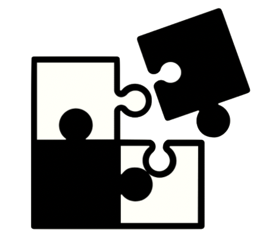
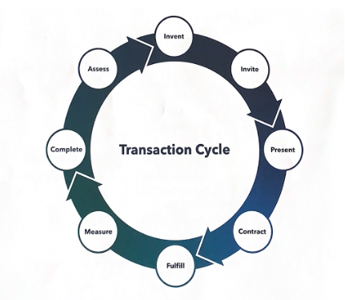

<
>

< problem solving >
Problem solving is something we do every day, we might not realise it but a majority of our daily tasks and jobs revolve around solving problems, you could even go as far as saying human beings are problem solving machines, well…just as much as they are problem making machines.
Simple Problem
During Sprint 3, during Intro to JavaScript I struggled with getting my head around the syntax, I completely understood the concepts and their context but found myself struggling to write the correct syntax. After spending a prolonged period staring at my computer screen, I decided to send a message into the foundations slack channel and would take a break to clear my head. One cup of tea later, I went back to my code to see if this reset had done anything to the way I was looking at this problem, low and behold I realized I had been overcomplicating the syntax, really over complicating it. I put my new syntax in and it worked, just to be sure I checked my slack thread and my amazing teammates had also pointed out I was on the right track but it had to think of a literal and simple syntax. I think this is a simple problem with a simple problem-solving process, its processes like these that we go through every day, and it taught me the importance of taking breaks and reading error messages.
Elegant Problem
While there are many problems that can be resolved through a simple process, there will also be times when you are struck with a complicated problem that requires an elegant solution.
While at University, I had an assignment that involved assessing a fake company/client and coming up with a new product that aligned with this client and their growth trajectory. I got stuck into this project, and got to a step which involved discussing with a ‘company representee’ aka a tutor, it was then I knew that the product I had actually didn’t have any value to the company’s customer base. I went back to square one and referenced a resource I had learnt about called ‘The Transaction Cycle’.

In this cycle, it allows you to follow a process for during a transaction (project) and also enables you to see where a breakdown might occur/has occurred and I came to the conclusion, I didn’t correctly go through the ‘Complete and Assess’ portion. Through this I gained clarity that my breakdown was because I developed a product that didn’t align with this client’s current place in their growth cycle, the reason it didn’t have any value to both the customers and company was because it’s a product that would be introduced in the future, as it aligned with their overall vision but another product/campaign would need to be introduced before this product would work for my client. This really led me to understand how sometimes problem solving doesn’t have to be linear, and using a pre-existing structure can be a powerful tool to and contribute to your own learning journey. In future I will continue to use this transaction cycle, as it translates to so many areas of life and will be especially useful in team environments.
Pseudocode
- I am trying more and more to get into Pseudocode as I know it’s designed to help me understand the function of each line of code but I still haven’t developed it as a habit but will continue to practice it until it becomes an instinct.
Trying Something
- This is definitely my first instinct, I always do as much as I can myself even if that is something as simple as making a function. I will continue to keep doing this first as I know this is my best way to learn, I find it easier to describe what I have done in the pseudocode after doing trying it out.
Rubber Ducky Method
- I find this method to be quite fun, it’s a humorous approach to problem solving and understanding errors in code. Its actually quite similar to what I have been doing, while studying I tend to have a puppy at my feet, so sometimes I explain things to her to help myself. I think I will invest in a rubber ducky.
Reading error messages
I use this method quite a lot, I think it’s a great way to understand why the computer doesn’t read the code the way we want it to.
Console.logging
- This is something I think that goes hand in hand with reading error messages, it is important to console log out your code so you know that all of the code works, I do this a bit but want to develop a better habit for it.
Googling
- I love googling things, it helps so much and I find I still have to learn the syntax but I get a great clarification mostly from other developers as to the process of how this provided syntax works.
Asking your peers for help
- This is definitely one of my last resorts as I try to do all above steps before asking my peers, although our slack channel is full of amazing people who love to help others and they use it as a learning process for themselves which is great.
Asking coaches for help
- I think this is something I need to improve on, I tend to go through all the other methods before I ask my facilitator for help, even though she is amazing and loves to help us. I need to be more comfortable with asking for help, it’s not something that makes me look stupid.
Improving your process with reflection
- I really enjoy the process of reflections, but it still isn’t natural to me. It’s something I would avoid actively, but end up enjoying the outcome of reflecting on my learning journey. I will continue to develop this habit.